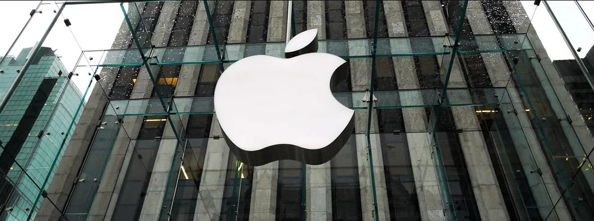
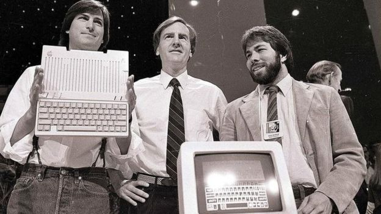
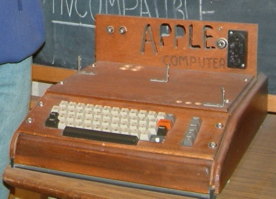
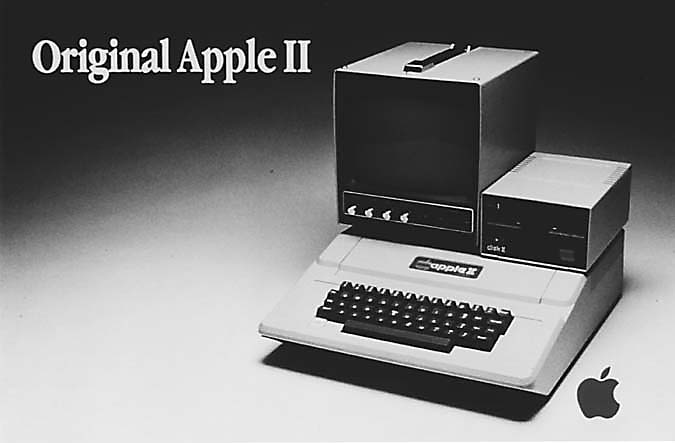
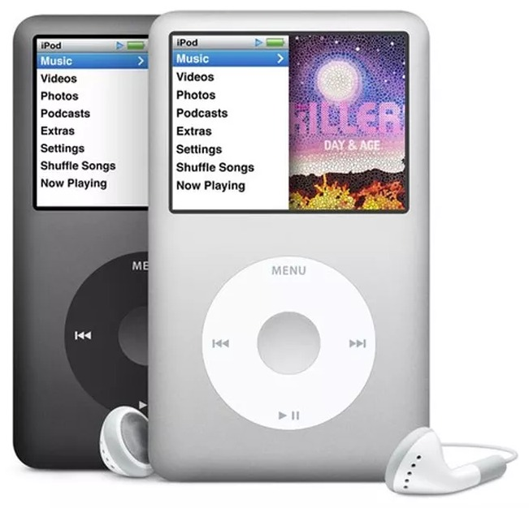
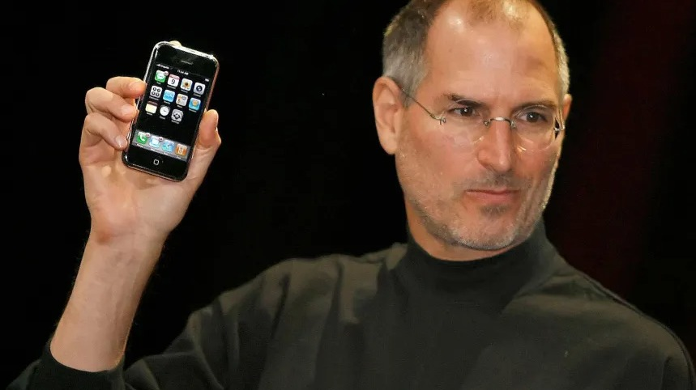
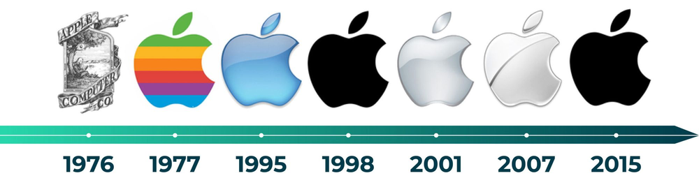

A história da Apple, a marca da maçã
Você com certeza já ouviu falar dessa empresa, que é referência em tecnologia e design, não é mesmo? Afinal, é impossível não se deparar diariamente com uma série de dispositivos da marca! Criadora dos famosos iPhones, iPads e iPods, a Apple tornou a imagem de uma maçã mordida como um símbolo de poder e liderança, conhecido em todas as partes do mundo.
Como tudo começou?
Steve Jobs, Steve Wozniak e Ronald Wayne começaram a produzir computadores em miniatura, em Cupertino, no Vale do Silício que existia na Califórnia.
O trio começou produzindo computadores em miniatura em uma garagem e, no primeiro dia de abril em 1976, fizeram o primeiro lançamento da marca, o aparelho Apple I.
Apple I
O primeiro computador colocado no mercado foi o Apple I , feito por Wozniack. O lançamento deu início à produção de computadores pessoais, mas não fez tanto sucesso inicialmente. O aparelho foi recusado por empresas como Atari e HP que não viam um futuro promissor na ideia e acabou apresentando um baixo número de vendas. Perda deles, não é mesmo?
Esse computador, apesar de, hoje, ser considerado arcaico e pouco útil, foi vendido, recentemente, pelo pequeno valor de US$905.000, que equivalente a 3,6 milhões de reais! Dá pra acreditar?
Apple II
A empresa só decolou na verdade, em 1977, quando o Apple II foi apresentado em uma feira de informática. Em 1980, quando lançaram o Apple II, a empresa começou a explorar o mercado internacional. Em sequência, nessa mesma década estavam passando por uma grande crise, quando Wozniack sofreu um acidente aéreo e Steve Jobs assumiu como CEO.

Apesar dos resultados positivos que a Apple vinha alcançando no mercado, sua equipe começou a vivenciar conflitos internos, que resultaram no pedido de demissão de Steve Jobs em 1985.
Com a sua saída, Steve decidiu fundar a empresa NeXT, dando continuidade à formulação de computadores em sua carreira. Vários funcionários da Apple o seguiram nessa iniciativa e foram trabalhar na nova empresa.
Enquanto Jobs desenvolvia uma carreira na nova empresa, a Apple enfrentava diversas dificuldades. A situação só foi contornada quando, em 1997, ele decidiu voltar para a Apple na função de conselheiro. Nesse momento, a empresa tinha que lidar com prejuízos superiores a 1,8 bilhão de dólares!
Inicialmente, Jobs defendeu a redução da gama de produtos da Apple, que passou a focar, então, na produção de apenas quatro tipos de computadores.
Feito isso, a marca começou a avançar na recuperação de resultados e chegou a hora de focar em inovações, o grande diferencial da Apple.
O produto que mudou a história da música
Lembra do velho e bom MP3? Pois então, em 2001, a Apple decidiu lançar um da própria marca, o famoso iPod, que, além de inovar nas funcionalidades e design, foi acompanhado da criação de uma plataforma musical.
Primeiro dispositivo de muitos usuários da marca, o iPod foi uma revolução em diversos sentidos. Além de ter um tamanho diminuto, o primeiro modelo tinha um disco rígido de 5GB com capacidade para incríveis 1.000 músicas, algo bastante impressionante para época. O iPod foi e é, até hoje, um grande sucesso de vendas.
Há 15 anos, o primeiro iPhone era lançado
O anúncio oficial do produto aconteceu em 9 de janeiro de 2007, mas o lançamento no mercado dos Estados Unidos veio mais tarde, em 29 de junho daquele ano.
Considerado enorme na época, o primeiro iPhone contava com uma tela de 3,5 polegadas com resolução de 320x480 pixels, câmera de 2 megapixels e a revolucionária tecnologia multitouch. O smartphone estava disponível em versões com 4 GB, 8 GB ou 16 GB de armazenamento interno. O primeiro iPhone já foi lançado com preço salgado, US$ 599 (na cotação atual, cerca de R$ 2.950 sem impostos).
No Brasil, o primeiro a chegar foi o da segunda versão, o iPhone 3G, em 2008. Hoje, um total de 33 séries de iPhones já chegaram às mãos dos consumidores — os mais recentes deles (os iPhones 13, 13 mini, 13 Pro e 13 Pro Max) foram lançados em 2021.
Como surgiu o nome Apple?
O nome Apple foi uma ideia de Steve Jobs, que costumava trabalhar ocasionalmente em um pomar em Oregon nos Estados Unidos. Ao voltar da fazenda onde eram produzidas as maçãs, Jobs escolheu o nome, que, segundo ele, era "divertido, espirituoso e não intimidante".
Um dos benefícios pensados sobre o nome seria a inicial A, que faria com que ele ficasse no início de qualquer lista.
Há, também, uma teoria de que a ideia teria surgido da emblemática cena de wwsentado debaixo de uma árvore sendo atingido na cabeça por uma maçã.
A evolução do logotipo da Apple
Mais tarde, a empresa selecionou um logotipo mais simples, uma maçã comida, que é o famoso símbolo que todos nós conhecemos.
Alguns dizem que essa escolha seria uma referência a Alan Turing, um gênio da computação que cometeu suicídio ao comer uma maçã contaminada por cianeto.